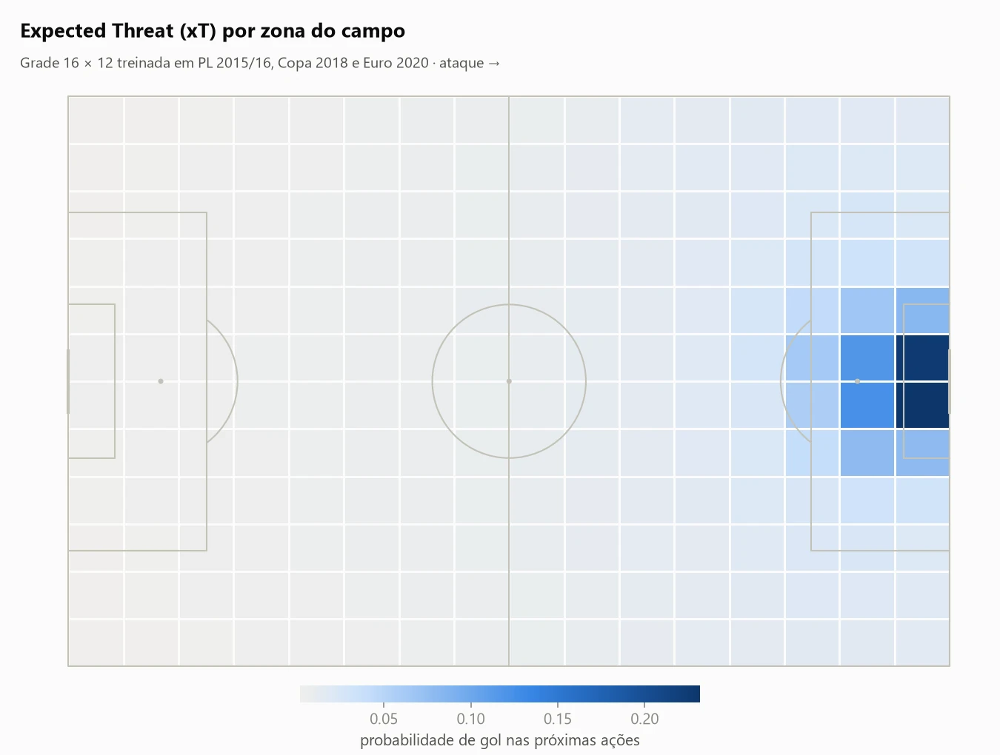
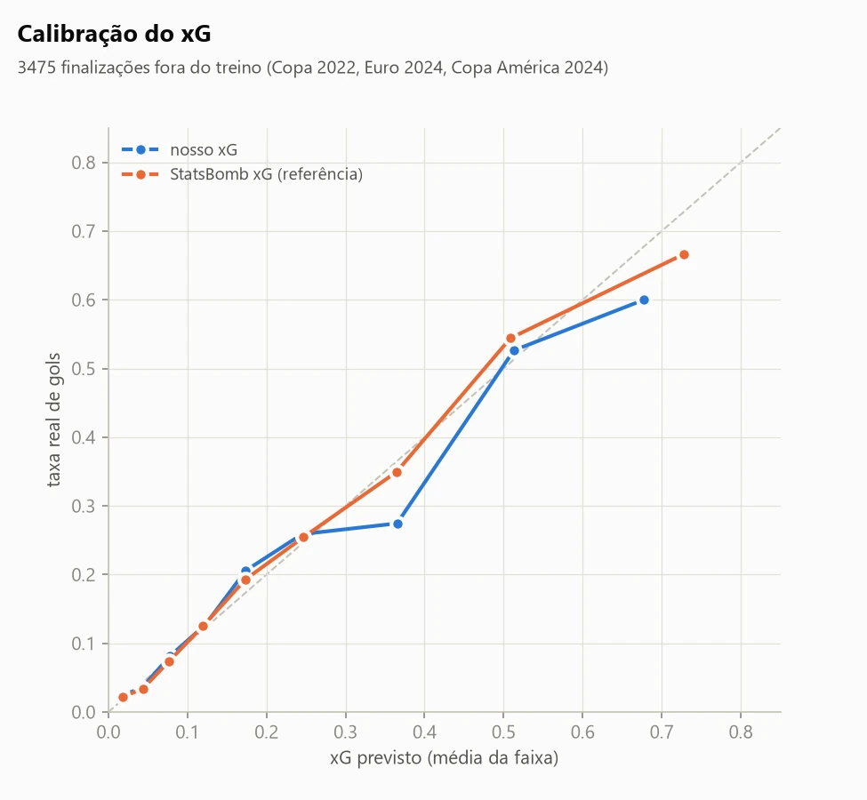
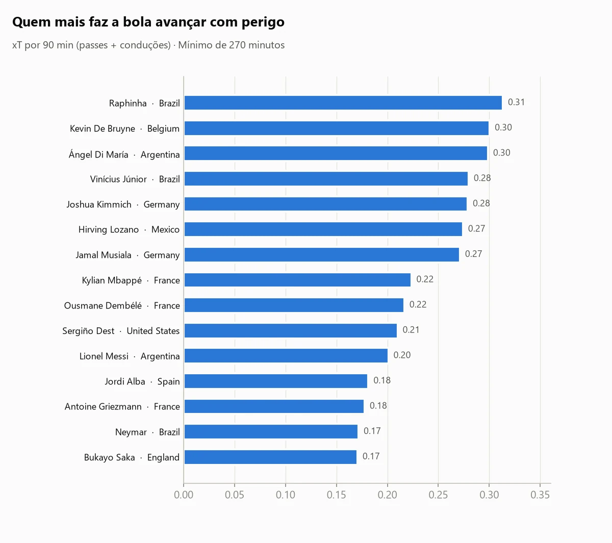
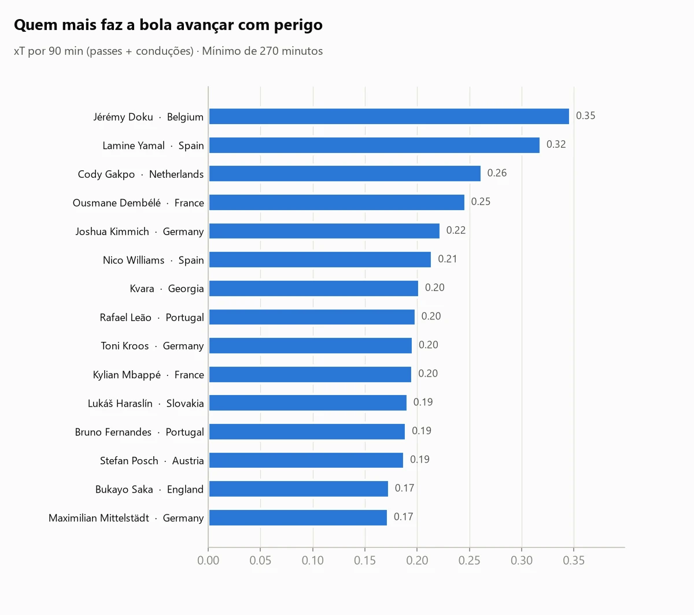
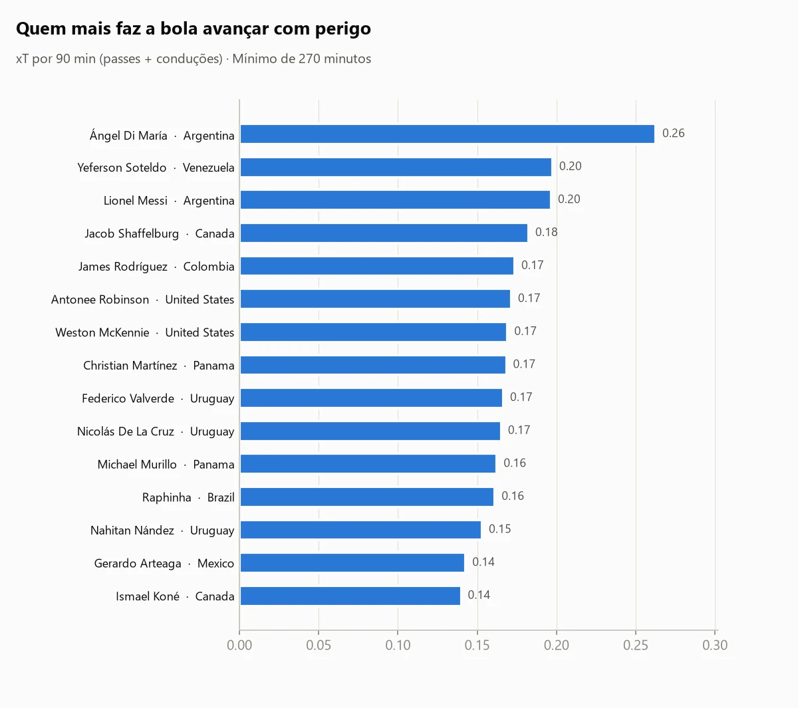

Futebol: xG e xT
com dados públicos
O que é uma boa chance de gol — e quem cria ameaça antes da finalização? Este estudo usa eventos de jogo para estimar a qualidade dos chutes com Expected Goals (xG) e o valor da progressão da bola com Expected Threat (xT).
Na avaliação fora do treino, o xG próprio alcançou AUC de 0,7798, ante 0,8014 da referência StatsBomb. Nos rankings de xT por 90 minutos, Raphinha, Jérémy Doku e Ángel Di María lideram os recortes publicados de seus torneios.
Problema / pergunta
Contar gols e assistências deixa de fora a qualidade das oportunidades e parte da construção ofensiva. O xG atribui a cada chute uma probabilidade de gol. O xT permite olhar para passes e conduções que levam a bola a zonas mais perigosas, mesmo quando a jogada não termina em chute.
A proposta é comparar um modelo próprio de xG com o xG fornecido pela StatsBomb nos mesmos chutes e identificar quem mais acrescenta ameaça com a bola em cada torneio.
Dados
- Fonte e condições de uso
- Exclusivamente StatsBomb Open Data: eventos e contexto das finalizações. Uso sujeito ao Public Data User Agreement; crédito e logo conforme o README oficial.
- Treino
- Premier League 2015/16, Copa do Mundo 2018 e Euro 2020. O README do projeto registra 12.826 finalizações no conjunto de treino; os pênaltis são tratados à parte no modelo.
- Avaliação e torneios apresentados
- Copa do Mundo 2022, Euro 2024 e Copa América 2024: 3.475 finalizações sem pênaltis, com 313 gols observados no conjunto de avaliação.
- Granularidade e cobertura
- Chutes para o xG; ações com bola para o xT; agregação por jogador nos rankings. Os relatórios consultados não documentam totais de partidas nem contagens agregadas de chutes separadas por torneio. A data de extração não está registrada nesses relatórios.
Pipeline
Os eventos são preparados para duas análises: finalizações com suas características geométricas e de contexto, e ações no formato SPADL para medir progressão. Os modelos aprendem nos torneios de treino e são aplicados às competições de avaliação. A etapa de relatório compara as previsões de xG com os gols observados e agrega o xT dos jogadores por 90 minutos.
Método
xG: geometria e contexto do chute
O modelo usa distância e ângulo de abertura do gol, deslocamentos longitudinal e lateral em relação ao gol, parte do corpo e situação da jogada. O contexto inclui adversários no cone entre chute e traves, presença do goleiro nesse cone, distância do goleiro ao chute e ao gol, adversário mais próximo e quantidade de adversários nas proximidades.
Essas posições vêm do freeze frame de evento fornecido pela StatsBomb: um retrato das posições no instante do chute. As marcações one_on_one e open_goal ficam fora das features.
O classificador é o HistGradientBoostingClassifier do scikit-learn, com variáveis numéricas e categóricas. O ajuste exclui pênaltis e usa parada antecipada com 15% de validação interna. Quando há pênaltis para prever, eles recebem a taxa de conversão observada no treino.
Validação e calibração
As três competições de teste não participam do treino. A avaliação sem pênaltis compara ROC AUC, log loss e Brier nos mesmos chutes para os dois modelos. AUC mede a capacidade de ordenar chances; log loss e Brier avaliam o erro das probabilidades, sendo melhores quando menores.
A curva de calibração compara o xG médio previsto em cada faixa com a frequência real de gols. Ela é um diagnóstico das probabilidades; o método não aplica uma recalibração posterior. A proximidade dos totais de xG e gols, sozinha, não demonstra calibração em todas as faixas.
xT: o valor de mudar a bola de lugar
O método de Expected Threat de Karun Singh, implementado com socceraction, divide o campo em uma grade de 16 × 12. Cada célula estima a probabilidade de a equipe marcar nas próximas ações. Passes e conduções bem-sucedidos recebem a diferença xT(destino) − xT(origem), com interpolação bilinear entre células.


xt_grade.png. Data: StatsBomb Open Data.Resultados: o xG próprio e a referência
A StatsBomb teve AUC maior e erros menores no teste. O modelo próprio estimou 317,7383 gols esperados para 313 gols observados; a StatsBomb estimou 315,2701. Esses resultados descrevem este conjunto de torneios.
| Métrica | xG próprio | StatsBomb |
|---|---|---|
| ROC AUC ↑ | 0,7798 | 0,8014 |
| Log loss ↓ | 0,2561 | 0,2454 |
| Brier ↓ | 0,0722 | 0,0687 |
| xG acumulado | 317,7383 | 315,2701 |
| Gols observados | 313 | 313 |
Fonte dos valores: relatório de modelos, xg_avaliacao.csv. O denominador de chutes está na figura de calibração; os torneios de treino e o volume de treino estão no README do projeto.


xg_calibracao.png. Data: StatsBomb Open Data.Resultados: quem cria ameaça com a bola?
Os gráficos ordenam o xT de passes e conduções por 90 minutos, com mínimo de 270 minutos. Os valores abaixo reproduzem o arredondamento das figuras. A métrica mede progressão com bola; sua leitura depende da função do jogador e do contexto da equipe.
Copa do Mundo 2022
Raphinha: 0,31 xT/90, seguido por Kevin De Bruyne e Ángel Di María, ambos exibidos com 0,30. O arredondamento das barras não significa igualdade exata entre os dois.


wc-2022/top_xt.png. Data: StatsBomb Open Data.Euro 2024
Jérémy Doku: 0,35 xT/90, à frente de Lamine Yamal (0,32) e Cody Gakpo (0,26) no recorte publicado.


euro-2024/top_xt.png. Data: StatsBomb Open Data.Copa América 2024
Ángel Di María: 0,26 xT/90, seguido de Yeferson Soteldo e Lionel Messi, ambos exibidos com 0,20.


copa-america-2024/top_xt.png. Data: StatsBomb Open Data.Stack
Python, pandas e NumPy na preparação e agregação; scikit-learn no xG e na avaliação; socceraction/SPADL no xT; SciPy na interpolação da grade; Matplotlib na geração dos gráficos.
Limitações e próximos passos
- São dados de evento, sem tracking contínuo. As posições no instante do chute não descrevem toda a movimentação, a ocupação de espaços ou as ações sem bola.
- O treino e o teste usam uma amostra de competições. O resultado nas seleções desses torneios não garante desempenho equivalente em outras ligas ou temporadas.
- O mínimo de 270 minutos reduz participações muito curtas nos rankings, mas o xT/90 ainda depende da amostra, da posse de bola e do papel tático.
- O xT descrito atribui valor a movimentos bem-sucedidos. Não representa, sozinho, toda a contribuição ofensiva ou o custo das perdas de bola.
- A curva de calibração não traz intervalos de incerteza. O relatório não fornece uma métrica exclusiva de calibração nem desempenho separado por torneio.
Próximos passos: ampliar a avaliação para outras temporadas do StatsBomb Open Data, publicar métricas e cobertura por competição, estimar incerteza das curvas e testar recalibração em uma amostra separada. Nos rankings, comparar xT/90 por posição e contexto de posse.
Fontes
As figuras e métricas são dos relatórios do projeto, com as origens indicadas nas legendas e no registro de fontes e imagens. A fonte pública dos eventos é o StatsBomb Open Data.